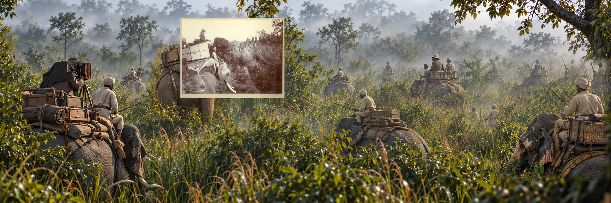

The collectionStudies in power
Studies in power
and its image.
A growing set of historical photographs whose worlds are rebuilt beyond their original frames.

Study 02 · 1911 · Nepalese TaraiInteractive study
The Royal Ring
Royal hunting, Nepalese host power, elephant handlers and the making of an iconic image.
Explore the nine stories ↗Study 01 · East AfricaPage forthcoming
Buffalo Corner
The companion study has a reserved home. Its final artwork and annotations are not published here yet.
Visit the placeholder ↗The series is planned as a small set of fully researched studies. Additional artworks will be added as they are ready for exhibition.